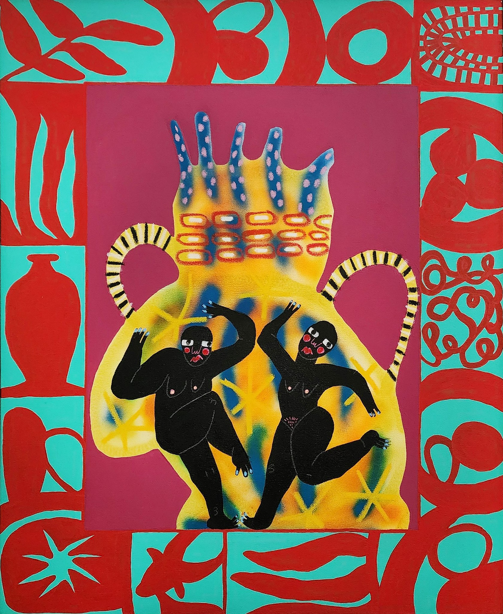

South Africa’s creative industries exist at a unique crossroads. On one side, a rich tradition of indigenous knowledge systems — textile practices, oral storytelling, communal art-making, and spatial design rooted in centuries of cultural evolution. On the other, the institutions of contemporary design education, shaped largely by Western modernist frameworks that have historically marginalised these very traditions.
This article looks at what happens when indigenous knowledge stops being treated as source material to be “integrated” into Western design, and instead becomes the primary framework from which contemporary practice grows.
Observing the Integration Model
In South African design education, the word “integration” comes up a lot. What we notice is that it tends to work in one direction — indigenous motifs applied to Western design structures. Pattern-as-decoration rather than philosophy-as-foundation. The practitioners we’ve been watching do something different.
“The most interesting practitioners we encounter don’t borrow from indigenous traditions. They think through them.”
What their work shows is that African knowledge systems contain design methodologies of their own — relational, participatory, ecological — that are worth paying close attention to, especially now.

Case Studies: Working From Within
Laduma Ngxokolo’s MaXhosa Africa is perhaps the clearest South African example of indigenous knowledge operating as a primary design framework. Ngxokolo, who studied textile design at Nelson Mandela University in the Eastern Cape, built his entire brand from a single question: why does nobody make knitwear that reflects Xhosa beadwork traditions? The answer was not to “add” Xhosa motifs to existing knitwear patterns. It was to start from the beadwork itself — its geometry, its colour systems, its cultural logic — and develop a contemporary textile language that grows directly from that tradition. MaXhosa has since shown at New York Fashion Week and been stocked internationally, but the work remains rooted in a specific cultural knowledge system. It does not borrow from Xhosa tradition. It thinks through it.
Andile Dyalvane takes a parallel approach in ceramics. Born and raised in Ngobozana, a rural village in the Eastern Cape, Dyalvane’s monumental clay works draw directly on Xhosa concepts of uMlingo (ancestral magic) and the scarification markings that encode identity and belonging in his community. His vessels are not decorative objects; they are what he calls “earth connections” — material links between contemporary practice and ancestral knowledge transmitted through generations of making. Dyalvane has exhibited at the Friedman Benda gallery in New York and the Southern Guild in Cape Town, but the intelligence in his work comes from Ngobozana, not from the gallery system.
Toward a New Curriculum
What would South African design education look like if it started from indigenous frameworks? Not as an elective module or a cultural studies add-on, but as the foundational methodology through which all design is taught?
This is not a theoretical question. Several institutions — including programmes at the University of Cape Town, Stellenbosch, and the Durban University of Technology — are beginning to experiment with curriculum structures that position Ubuntu philosophy, participatory methods, and ecological thinking as core design competencies.
The reality, of course, is that institutions move slowly. Accreditation frameworks, industry expectations, and academic hierarchies were built around certain design canons. What we observe is an emerging tension between these inherited structures and the practitioners who are already working from a different foundation.
The Role of AnthroWorks
AnthroWorks sits at this crossroads as an observer. We study how people, places, and culture shape each other — and we document what we find. What we’re seeing in South African design right now is a generation of practitioners who are already living the answer to questions the institutions are still figuring out how to ask.
This publication is the first in a series. Future articles will examine specific case studies in more depth, interview practitioners working at the intersection of indigenous knowledge and contemporary design, and propose concrete curriculum frameworks that institutions can adapt.